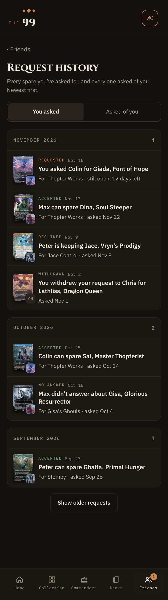
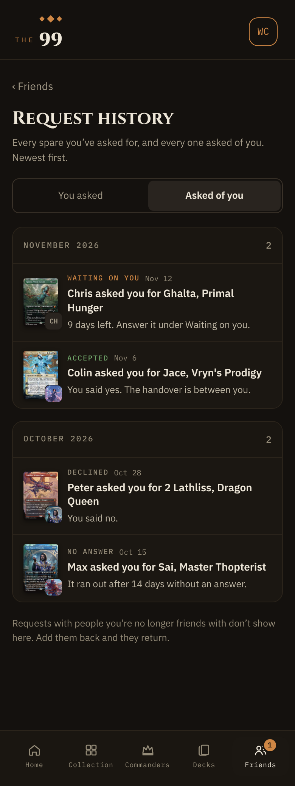
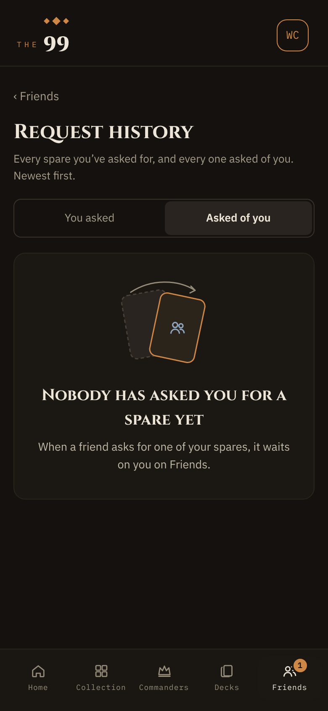

H · /friends/requests · 390
Each month is one box, its name and count in the header band. Your requests’ shipped rows with no ✕ and no Ask again; the whole row opens card details.
H1 · You asked

Every outcome: Requested, Accepted, Declined, Withdrawn, No answer. A cleared ask still shows. Show older requests after 30.
H2 · Asked of you

An open one says where to answer, never offers Yes or No here. No withdrawn rows on this side. The foot line shows only when an ex-friend has rows (Q2).
H3 · an empty tab

One tab can be empty while the other is not: the large handover mark, a title, and where requests come from, in the same box.